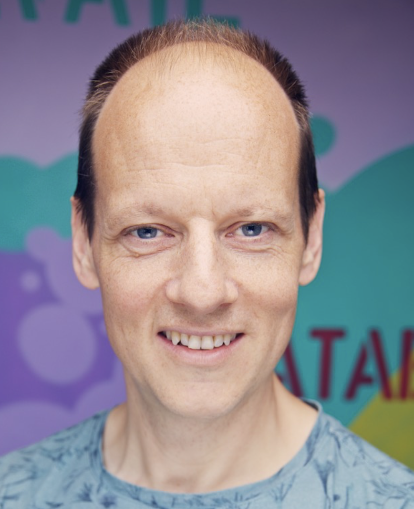

<!DOCTYPE html PUBLIC "-//W3C//DTD XHTML 1.0 Transitional//EN" "http://www.w3.org/TR/xhtml1/DTD/xhtml1-transitional.dtd">

<html xmlns="http://www.w3.org/1999/xhtml" xml:lang="en" lang="en">

<head>


  <meta http-equiv="Content-Type" content="text/html; charset=utf-8" />

  <title>ICDE 2024 Invited Talks</title>


  <link rel="stylesheet" href="icde2024.css" />
</head>
</html>
<html xmlns="http://www.w3.org/1999/xhtml" xml:lang="en" lang="en">
<body style="background-color: rgb(255, 255, 255); font-family: arial; font-size: 10pt;">


<table cellspacing=0 cellpadding=0 border=0 width="100%" >
<tr><td align="center">
<table style="width: 1040px; height: 800px;" cellpadding="0" cellspacing="0" border=0>


  <tbody>


    <tr style="height: 151px;">


      <td width="100%" align="left">


<table width="1040" height="120" border="0" align="left" cellpadding="0" cellspacing="0" bordercolor="#CCCCCC">

<tr>
<td  align="left" valign="middle" colspan=2> </td>		
</tr>
<tr>
<td></td><td valign="bottom"><hr /></td>
</tr>
</table>


<!-- end header !--></td>
    </tr>


    <tr	valign="top">


      <td>

      <table style="width: 100%; height: 100%;" cellpadding="1" cellspacing="0" border=0>


        <tbody>


          <tr valign="top">
			<!-- start side panel !-->
<td style="width: 23%;">
<div id="sidebar">
<table style="width:100%"><tr><th class="tblCellHead" style="background-color:#73231A;color:white;">General Information</th></tr></table>
<ul>
<li><a href="index.html">Conference Overview</a></li>
<li><a href="conference_officers.html">Conference Officers</a></li>
<li><a href="di.html">Diversity and Inclusion</a></li>
</ul>

<table style="width:100%"><tr><th class="tblCellHead" style="background-color:#73231A;color:white;">Program</th></tr></table>
<ul>
<li><a href="program.html">Detailed Program </a></li>
<li><a href="keynotes.html">Keynotes </a></li>
<li><a href="papers.html">Research Papers</a></li>
<li><a href="invited.html">Industry Invited Talks</a></li>
<li><a href="industry.html">Industry &amp; Application  Papers</a></li>
<li><a href="tutorials.html">Tutorials </a></li>
<li><a href="demos.html">Demonstrations</a></li>
<li><a href="DEFT.html">Future Technologies Papers</a></li>
<li><a href="phd.html">PhD Symposium Papers </a></li>
<li><a href="lightning.html">Lightning Talks</a></li>
<li><a href="TKDE.html">TKDE Posters</a></li>
<li><a href="sponsorTalks.html">Sponsor Talks</a></li>
<li><a href="panel.html">Panels</a></li>
<li><a href="dei.html">Diversity, Equality and Inclusion </a></li>
<li><a href="workshops.html">Workshops </a></li>
<li><a href="awards.html">Awards </a></li>
<li><a href="social.html">Social Events </a></li>
</ul>

<table style="width:100%"><tr><th class="tblCellHead" style="background-color:#73231A;color:white;">Participant Information</th></tr></table>
<ul>
<li><a href="registration.html">Registration</a></li>
<li><a href="venue.html">Venue  &amp; Accommodation</a></li>
<li><a href="travel.html">Travel Information</a></li>
<li><a href="studentAwards.html">Student Travel Awards</a></li>
</ul>

<table style="width:100%"><tr><th class="tblCellHead" style="background-color:#73231A;color:white;">Calls for Contributions</th></tr></table>
<ul>
<li><a href="CFP_research.html">Research</a></li>
<li><a href="CFP_industry.html">Industry and Application</a></li>
<li><a href="CFP_demos.html">Demonstrations</a></li> 
<li><a href="CFP_tutorials.html">Tutorials</a></li> 
<li><a href="CFP_DEFT.html">Future Technologies Special Session</a></li>
<li><a href="empty.html">Panels</a></li> 
<li><a href="CFP_workshops.html">Workshops</a></li>
<li><a href="CFP_phd.html">PhD Symposium</a></li>
<li><a href="CFP_lightning.html">Lightning Talks</a></li>
<li><a href="CFP_TKDE.html">TKDE Posters</a></li>
</ul>
	
<table style="width:100%"><tr><th class="tblCellHead" style="background-color:#73231A;color:white;">Dates and Guidelines</th></tr></table>
<ul>
<li><a href="important_dates.html">Important Dates</a></li>
<li><a href="empty.html">Formatting Guidelines</a></li>
</ul>

<table style="width:100%"><tr><th class="tblCellHead" style="background-color:#73231A;color:white;">Sponsorship Opportunities</th></tr></table>
<ul>
<li><a href="conference_opportunities.html">Contribution Packages</a></li>
<li><a href="conference_opportunities.html"></a></li>
</ul>
</div>
<!-- end side panel !-->       </td>


                    <td style="border-left: 1px solid #CCCCCC; width: 100%; height: 100%" valign="top"><table border="0" width="100%" height="100%" id="table1">
				        <tr>
				          <td align="left" valign="top">
				             <div id="main"> 

<p align="center"><table border="0" width=100%>
</td></tr>
</table>
</div></p>
		</div>
	</div>
				          
				          
	<div id="main"> 
<p>
	<table cellspacing="0" cellpadding="0" border=0 width=100%>
	<tr><td>
	<!-- HERE STARTS THE CONTENT. -->
	

	<div class="title">Invited Talks</div>
	<p/>
	<table id="Program" style="width:90%">
		<tr>
			<th class="tblCellHead" style="background-color:#AB4951;color:white;">Tuesday May 14th, 2024 @ 10:15</th> 
		</tr>
	</table>
	<table id="invitedIndustry1" style="width:90%">
		<tr>
			<th class="tblCellHead" style="background-color:#A57E25;color:white;">Cloud Database Systems Invited Talk [In Theater 2, Chair: Renata Borovica-Gajic]</th> 
		</tr>
		<tr>
			<td class="tblCellCnt">
				<a href="">Vector Search and Databases</a>
        		<br/> 
        		by Yannis Papakonstantinou (Google).
				<p/>
				Semantic search ability, via embedding (vectors) and vector indexing, has been added to Google Cloud Platform (GCP) databases in order to enable GenAI applications. The inclusion of vectors in databases enables developers to build GenAI applications on their familiar and trusted SQL environment, while being sure that the vectors are up-to-date and transactionally consistent. 
				The inclusion of vectors in databases raises two R&D questions: First, can databases with vector abilities perform as well as purpose-built vector databases in pure vector search? Second, what are the opportunities and respective R&D challenges that emerge at the intersection of structured data and vectors? In response to the first question, we present the GCP AlloyDB vector indexing (see <a href="https://services.google.com/fh/files/misc/scann_for_alloydb_whitepaper.pdf">whitepaper</a>). In response to the second question, we discuss how the GCP AlloyDB enables unified SQL access to structured data and vectors. For example, queries that involve joins, filters and vector similarity. We show that databases with vector abilities have fundamental intrinsic ease-of-use and performance advantages (over standalone purpose-built vector databases) in processing such queries while novel query optimization and plan execution work turns the fundamental advantages into material ones. 
				<br/>
				<p/>
				 <b>Yannis Papakonstantinou</b> is a Distinguished Engineer, working on Query Processing and GenAI, at Google Cloud. He is also an Adjunct Professor of Computer Science and Engineering at the University of California, San Diego, following many years of having been a UCSD regular faculty member. Previously he was an architect in query processing & ETL at Databricks. Earlier, he was a Senior Principal Scientist at Amazon Web Services from 2018-2021 and was a consultant for AWS since 2016. He was the CEO and Chief Scientist of Enosys Software, which built and commercialized an early Enterprise Information Integration platform for structured and semistructured data. The Enosys Software was OEM'd and sold under the BEA Liquid Data and BEA Aqualogic brand names, eventually acquired in 2003 by BEA Systems.
				His R&D work has been mostly on query processing with focus on querying semistructured data. He has published over one hundred twenty research articles that have received over 20,000 citations. Yannis holds a Diploma of Electrical Engineering from the National Technical University of Athens, MS and Ph.D. in Computer Science from Stanford University (1997).			</td>
		</tr>
	</table>
	
	<p/>
	<table id="Program" style="width:90%">
		<tr>
			<th class="tblCellHead" style="background-color:#AB4951;color:white;">Tuesday May 14th, 2024 @ 16:21</th> 
		</tr>
	</table>
	<table id="invitedIndustry2" style="width:90%">
		<tr>
			<th class="tblCellHead" style="background-color:#A57E25;color:white;">Cloud Database Systems Invited Talk [In Theater 2, Chair: Essam Mansour]</th> 
		</tr>
		<tr>
			<td class="tblCellCnt">
				<a href="">From Truck to Racecar: Revving up Transactional Throughput 1000x in an Analytical Engine</a>
        		<br/> 
        		by Jonathan Dees (Snowflake).
				<p/>
				Originally designed for efficient analytical data processing, Snowflake has recently introduced hybrid tables, seamlessly integrating transactional and analytical workloads. We explore the nuanced approach required to optimize performance for short-running transactional queries in contrast to analytical queries, resulting in a 1000x speedup. We'll share the challenges we encountered, the strategic steps we implemented, and the insights gained along the way.		
				<br/>
				<p/>
				 <b>Jonathan Dees</b>  is a Principal Engineer at Snowflake, based in Berlin, where he specializes in SQL query processing.
				His focus involves optimizing the performance of Snowflake's query execution platform for
				analytical workloads and, more recently, hybrid transactional and analytical workloads.
				With prior experience at SAP, Jonathan worked on query processing for SAP HANA including
				building and tuning new query operators, applying just in time code compilation and parallel processing.
				His general interests include database systems, performance, benchmarks and algorithms.</td>
		</tr>
	</table>
	
	<p/>
	<table id="Program" style="width:90%">
		<tr>
			<th class="tblCellHead" style="background-color:#AB4951;color:white;">Wednesday May 15th, 2024 @ 10:00</th> 
		</tr>
	</table>
	<table id="invitedIndustry3" style="width:90%">
		<tr>
			<th class="tblCellHead" style="background-color:#A57E25;color:white;">Infrastructure for Machine Learning Invited Talk [In Theater 2, Chair: Peter Boncz]</th> 
		</tr>
		<tr>
			<td class="tblCellCnt">
				<a href="">Deletion Vectors: No-Regrets Row-Level Updates in Delta Lake</a>
        		<br/> 
        		by Bart Samwel (Databricks).
				<p/>
				Fine-grained updates to traditional Parquet data lakes are inefficient because they require rewriting entire Parquet files even to update only a single row. In recent years, open Lakehouse table formats such as Delta Lake, Apache Iceberg and Apache Hudi have each introduced support for row-level updates. In this talk, we will discuss why row-level updates are important for common workloads. We will then dive into Delta Lake's Deletion Vectors and how they enable row-level updates with virtually no overhead. And finally, we will do a comparative analysis with the techniques that other Lakehouse table formats use to support row-level updates: Iceberg's Position Deletes, and Hudi's Merge-on-Read tables, and show how Deletion Vectors improves on these techniques.<p/>
				 <b>Bart Samwel</b> is a Principal Engineer at Databricks, based in Amsterdam. He leads an engineering team that focuses on the performance of DML operations on Delta Lake tables such as MERGE, UPDATE and DELETE. With his team, he created Delta Lake's Deletion Vectors. He takes at least partial blame for many other recent innovations in Delta Lake. Outside work, he likes to tinker with coffee and to exercise his vocal chords. 
			</td>
		</tr>
	</table>

	<p/>
	<table id="Program" style="width:90%">
		<tr>
			<th class="tblCellHead" style="background-color:#AB4951;color:white;">Wednesday May 15th, 2024 @ 17:00</th> 
		</tr>
	</table>
	<table id="invitedIndustry4" style="width:90%">
		<tr>
			<th class="tblCellHead" style="background-color:#A57E25;color:white;">Query Performance Invited Talk [In Theater 2, Chair: Peter Boncz]</th> 
		</tr>
		<tr>
			<td class="tblCellCnt">
				<a href="">How I Learned to Stop Worrying About Benchmarks</a>
        		<br/> 
        		by Hannes Muhleisen (DuckDB Labs).
				<p/>
				Data management systems developers are obsessed with benchmarks. As a result, their systems are, too. Moving only slightly away from the over-trodden paths of TPC-H can yield surprising results. Yet users in the real world are unlikely to only ever run benchmarks, instead, their workloads are diverse, messy, and hard to capture in a consensus benchmark specification. In my talk, I will discuss the DuckDB teams' approach to benchmarks and performance, which prioritizes robustness over peak performance on specific queries.<p/>
				 <b>Hannes Muhleisen</b> is a creator of the DuckDB database management system and Co-founder and CEO of DuckDB Labs, a consulting company providing services around DuckDB. Hannes is also Professor of Data Engineering at Radboud Universiteit Nijmegen. His main interest is analytical data management systems.
			</td>
		</tr>
	</table>

	

		
		
		
		
		
	<!-- HERE ENDS THE CONTENT.-->
						
</td></td>       	  
</tr></table>


	             
	                </div>
	                
			               </td>
				        </tr>
				        <tr><td>
				        </td></tr>
			            </table>
			            

			            
				      <!--end of mainbody-->
            
			<p> <br />
            </p>            <hr> <div class="discl"><b>Disclaimer:</b> The Organizing Committee of a ICDE conference is not liable for any loss or damage arising from the activities of this particular conference as exercised by its agents: conference organizers, carriers, proceedings, publications and program committee.</div>
				       </td>
			<td style="width: 1%"></td>
          </tr>
        </tbody>
      </table>      </td>
    </tr>


<!--footer-->
  
       <tr>
	<td class="linkfooterbar" width="100%" align="center" bgcolor="#7d1a14">

<div id="textbar">&copy; ICDE 2024</div>
</tr>

<tr> 
    <td align="center">
      <table cellspacing=0 cellpadding=1 border=0 width=100% bordercolor="#077431">
	  <tr>
	  <td align="center" class="linkfooter">
        </p>        </td>
		</tr>
	  </table>    </td>
</tr>
  
  </tbody>
</table>
</td></tr></table>

</body>

</html>


	
